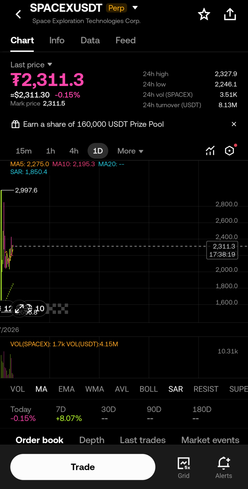

SpaceX Pre-Market Futures Are Now Live on OKX
SpaceX perpetual futures are no longer limited to decentralized exchanges. OKX has also entered the synthetic pre-market trading narrative.
From crypto tokens to pre-IPO company exposure, perpetual markets continue evolving rapidly. Products like SPACEXUSDT show how speculative trading infrastructure is expanding far beyond traditional crypto assets.

SPACEXUSDT on OKX
OKX has introduced SPACEXUSDT perpetual futures as part of the growing synthetic pre-market trading ecosystem.
This allows traders to speculate on SpaceX-related market sentiment through perpetual futures infrastructure directly on a major centralized exchange.
The Rise of Synthetic Pre-IPO Markets
The boundary between crypto, derivatives, and private-company exposure keeps becoming thinner.
SpaceX, OpenAI, and other pre-IPO names are now increasingly appearing inside perpetual futures ecosystems across both CEX and DEX platforms.